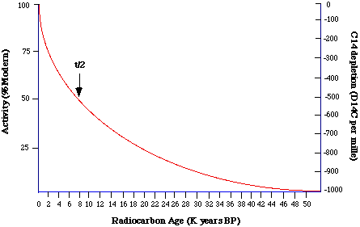
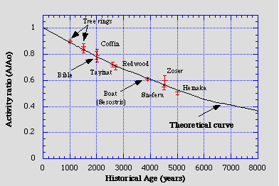

| Feature Article - July 2006 |
| by Do-While Jones |
We know that carbon 14 dating is totally irrelevant to the theory of evolution. Knowledgeable evolutionists don't claim that carbon 14 dating has anything to do with the theory of evolution. Ignorant evolutionists, however, think carbon 14 dating proves evolution, and continue to make that claim.
Comedian Lewis Black, who by no stretch of the imagination is a knowledgeable evolutionist, argues,
|
There is no reasoning with these people [creationists]--because they don't reason. We have the facts in carbon dating and fossils. 1 |
Perhaps we should not even dignify this with a response, but we do get emails from evolutionists asserting that carbon dating proves evolution. There must be many ignorant evolutionists out there. This essay is primarily selfish because it will save us time in the future. It will permit us to respond to these emails simply by saying, "Read our July, 2006, article titled, The Carbon 14 Myth."
 |
Carbon 14 is a radioactive element with a half-life of 5730 years. This means that half of the carbon 14 will decay in 5730 years. By 50,000 years, it will be almost completely gone, as shown in this diagram by Thomas Higham. 2 The red line shows how much carbon 14 will be in a sample, starting at 100% zero years ago, decaying to 0% after 50,000 years before the present (50 K years BP). |
Since all the carbon 14 is gone in 50 thousand years, it certainly can't be used by evolutionists to prove that dinosaurs lived 50 million years ago. There would not be any carbon 14 left in the sample to measure. That's why knowledgeable evolutionists never claim that carbon 14 is used to prove that dinosaurs lived 50 million years ago. But our high schools are apparently filled with kids who have been told by their science teachers that carbon dating proves dinosaurs are millions of years old.
There really is nothing more we need to say about this--but since we are on the subject let's explore it further.
Carbon 14 dating is unique among all forms of radioactive dating because it's half-life is short enough that we can experimentally verify the accuracy of carbon 14 dates. One can take a wooden artifact from ancient Rome, or ancient Egypt, or some other ancient culture for which we have accurate historical information, and compare the carbon date with the historical date.
| The graph at the right (from Thomas Higham's carbon 14 web page 3) compares the theoretical decay curve with the actual dates of items known from history. The black line goes from 1 (that is, 100%) at 0 years BP, down through 0.4 (that is, 40%) at 7,200 years ago. It can't be calibrated past 5,000 years ago because that's as far back as reliable historical data goes. |
 |
Other radioactive dating techniques (potassium-argon, rubidium-strontium, uranium-lead, etc.) can't be calibrated against historical data because their half-lives are so long that the theoretical line would go from 100% at 0 years ago to 99.9999% (or something very close to 100%) at 5,000 years ago. In other words, in a mere 5,000 years, there isn't time for any significant amount of the radioactive material to decay, so one can't verify that the expected amount has decayed.
But carbon 14 dating can be calibrated, and it has been discovered that certain corrections have to be made to "radiocarbon years" to convert them to "calendar years." Knowing these correction factors allows carbon 14 measurements to yield very accurate ages, back to 4 or 5 thousand years. But beyond 5,000 years, we have to guess what the correction factors are, so the ages are only as good as our guesses.
Why are any correction factors necessary at all? We are glad you asked. (You did want to ask, didn't you?) You need to understand how carbon 14 dating works to understand why correction factors are necessary.
Since many of the assumptions that one has to make when using carbon dating are similar to the assumptions one must make for other radioactive dating methods, it is worthwhile to examine them.
As you may know, carbon 14 is produced in the upper atmosphere when cosmic radiation interacts with nitrogen gas, converting nitrogen 14 to carbon 14. These carbon 14 atoms combine with oxygen to form carbon dioxide gas, which is absorbed by plants. The plants use the carbon in the carbon dioxide to make sugar and other edible stuff. Animals eat the plants, ingesting the carbon 14. As long as the plant or animal is alive, it keeps ingesting carbon, which is a mixture of stable carbon 12 and radioactive carbon 14. When the plant or animal dies, it stops eating carbon-containing food, so its earthly remains no longer absorb carbon 14. The carbon 14 that it had when it died, however, slowly decays into nitrogen gas. So, by measuring the amount of carbon 14 left in the specimen, one can tell how long it has been since it died. If you had a good high school science course, you already know all of that.
Here's what they didn't teach you in high school. In order to compute the carbon age date, you need to compare the amount of carbon 14 in the specimen with the amount of carbon 14 it had to begin with, and you don't know how much carbon 14 it had to begin with. You can make a pretty good guess, and that's where the correction factors come in.
The simplest guess is that the ratio of carbon 14 to carbon 12 is the same today as it was thousands of years ago. We know that isn't the case. The carbon ratio is very easily upset by a variety of factors. But before we talk about those factors, we need to consider some numbers.
You were probably taught in high school that the atmosphere is about 80% nitrogen and about 20% oxygen, and that is correct. Now, do some math and figure out how much of the atmosphere is carbon dioxide. When you add "about 80%" to "about 20%", you get "about 100%". Less than 1% of all the gas in the atmosphere is something other than oxygen or nitrogen, so the amount of carbon dioxide in the atmosphere is only a small part of less than 1%.
One government web site (which deals with global warming) says carbon dioxide levels before 1750 were 280 parts per million (ppm), but 377 ppm today. 4 That means 0.028% of the gas in the atmosphere before 1750 was carbon dioxide, but now it is 0.0377%.
On the day we searched Wikipedia, it said that the carbon dioxide level in 1998 was 365 ppm. This, it said, is 87 ppm more than 1750, which implies 278 ppm in 1750. 5 Of course, any kook can edit Wikipedia at any time, so there is no telling what it will say today.
According to a NASA web site,
|
Composition of the Atmosphere The atmosphere is primarily composed of Nitrogen (N2, 78%), Oxygen (O2, 21%), and Argon (Ar, 1%). A myriad of other very influential components are also present which include the water (H2O, 0 - 7%), "greenhouse" gases or Ozone (O, 0 - 0.01%), Carbon Dioxide (CO2, 0.01-0.1%). 6 |
Notice that nitrogen, oxygen, and argon add up to 78% + 21% + 1% = 100%. NASA says that the amount of carbon dioxide in the atmosphere might be as little as 0.01%, and certainly not more than 0.1%. That's an uncertainty of 10 to 1!
No matter how you slice it, there isn't much carbon dioxide in the atmosphere. But, since we need a number, let's say there has been about 0.03% carbon dioxide in the atmosphere for the past few thousand years, because that's the commonly cited value for 1750 (rounded to one significant figure).
|
There are three principal isotopes of carbon which occur naturally - C12, C13 (both stable) and C14 (unstable or radioactive). These isotopes are present in the following amounts C12 - 98.89%, C13 - 1.11% and C14 - 0.00000000010%. Thus, one carbon 14 atom exists in nature for every 1,000,000,000,000 C12 atoms in living material. 7 |
So, if the atmosphere is made up of 0.03% carbon dioxide, and 0.00000000010% of that carbon dioxide is carbon 14, then one trillionth of 0.03% of the gas molecules in the atmosphere contain carbon 14. The sidebar, "The Great Wall of BBs", attempts to put those numbers in perspective.
Because the amount of carbon in the atmosphere is so small, and since the amount of carbon 14 is just a small fraction of that, ratios involving carbon are very sensitive. Suppose you have a million dollars in the bank, and you add another hundred. It only changes your bank balance by 0.01%. But if you only have 10 cents in the bank, and you add $100, your bank account increases 10,000%. The atmosphere is a reservoir of carbon, but only one trillionth of 0.03% is carbon 14. You only have to add one trillionth of 0.03% to double the carbon 14 bank account!
Since there is so little carbon 14 to begin with, small changes in carbon 14 make large changes in ratios. That's why there must be correction factors.
Scientists have studied the amount of carbon in the atmosphere for many years (long before anyone was worried about global warming). One reason they did this was to calibrate carbon 14 dates. Here's what a secular website, devoted to calibration of carbon 14 dating, has to say about the amount of carbon in the atmosphere.
|
Since about 1890, the use of industrial and fossil fuels has resulted in large amounts of CO2 being emitted into the atmosphere. Because the source of the industrial fuels has been predominantly material of infinite geological age ( e.g coal, petroleum), whose radiocarbon content is nil, the radiocarbon activity of the atmosphere has been lowered in the early part of the 20th century up until the 1950's. The atmospheric radiocarbon signal has, in effect, been diluted by about 2%. Hans Suess (1955) discovered the industrial effect (also called after him) in the 1950's. 8 [emphasis in the original] Since about 1955, thermonuclear tests have added considerably to the C14 atmospheric reservoir. This C14 is 'artificial' or 'bomb' C14, produced because nuclear bombs produce a huge thermal neutron flux. The effect of this has been to almost double the amount of C14 activity in terrestrial carbon bearing materials (Taylor, 1987). 9 Radiocarbon samples which obtain their carbon from a different source (or reservoir) than atmospheric carbon may yield what is termed apparent ages. A shellfish alive today in a lake within a limestone catchment, for instance, will yield a radiocarbon date which is excessively old. The reason for this anomaly is that the limestone, which is weathered and dissolved into bicarbonate, has no radioactive carbon. Thus, it dilutes the activity of the lake meaning that the radioactivity is depleted in comparison to 14C activity elsewhere. The lake, in this case, has a different radiocarbon reservoir than that of the majority of the radiocarbon in the biosphere and therefore an accurate radiocarbon age requires that a correction be made to account for it. 10 [emphasis in the original] |
The same web site also talks about the effects volcanoes have on radiocarbon dates. The point is that there is so little carbon dioxide in the water and atmosphere, that comparatively small changes in amounts of carbon cause large percentage changes. Consequently, there are known correction factors which are used to convert radiocarbon years to calendar years, which work quite well for the last 5,000 years or so. But we don't know what the correction factors are for dates older than 5,000 years because we have no historical data to use for calibration.
The global warming folks are quick to point out that there are measurable changes in the amount of carbon dioxide in the atmosphere. There is no question they are right about that. We will leave it to others to argue whether or not changing the amount of carbon dioxide in the atmosphere from 0.0280% to 0.0377% will cause an appreciable change in global temperature, and whether or not that change in temperature will cause catastrophic environmental effects, and whether or not man caused it, and whether or not governments can do anything about it. We take no positions on these political issues.
We merely stand by the facts that there is very little carbon in the atmosphere, and that only about a trillionth of that carbon is carbon 14, and that it doesn't take much change in the amount of carbon 12 or carbon 14 to affect radiocarbon dating. Furthermore, fluctuations in atmospheric carbon levels over the past 5,000 years have been large enough to make it necessary to come up with complex algorithms to convert radiocarbon years to calendar years.
Some creationists are quick to argue that (1) if the evolutionists' assumption of uniformity is true, and (2) if the Earth is older than 50,000 years, then the amount of carbon 14 in the atmosphere should have reached a steady state. Since the carbon 14 ratio is still changing, they say that argues for a young earth.
If it is true that the earth has been around for 4.6 billion years, and if the sun has been shining on the nitrogen in the atmosphere for all that time, the amount of carbon 14 should not be changing. The fact that the carbon 14 ratio is changing does not prove the second assumption (i.e. that the Earth is old) is incorrect. The changing carbon 14 ratio merely proves that at least one of the evolutionists' two assumptions is incorrect.
We know the first assumption (i.e. that the carbon 14 ratio has not changed over the years) is wrong because we need correction factors to compensate for the changing ratio. Since the first assumption has been proven to be wrong, we can't tell if the second assumption is right or wrong.
The evolutionists certainly cannot claim that the ratio of carbon 14 to carbon 12 in the past is the same as it is today, because it has changed in the past, even before the industrial revolution.
|
The IntCal98 curve shows several "age plateaus" caused by variations in the atmospheric radiocarbon content. For the duration of such a plateau, the 14C/12C ratio fell at a rate equal to that of radiocarbon decay. For example, the "Golden Age of Greece" from 546 to 404 B.C. coincides with a radiocarbon plateau (~2450 radiocarbon years B.P.) that lasted nearly 350 years (see the second figure). Because of this plateau, the utility of radiocarbon dating in establishing chronologies for events between ~750 and ~450 B.C. is extremely limited. 11 |
Even if one ignores man's infernal, internal combustion engines, there have always been volcanoes and fires which put large amounts of carbon dioxide in the atmosphere, and practically all of that is carbon 12, reducing the ratio of carbon 14 to carbon 12. Because the processes that put carbon into the atmosphere are not constant, evolutionists can't know what the carbon ratio was more than 5,000 years ago, so they can't rely on carbon 14 dates any farther than that.
The discovery of tropical fossils in arctic places implies a time when the Earth was warmer, which might have been the result of more carbon dioxide (and therefore more carbon 12) in the atmosphere. If there was more carbon 12 in the atmosphere earlier than 5,000 years ago, then all radiocarbon dates would appear to be much older than actual calendar years.
If dinosaurs really did die out millions of years ago, they could not be dated using carbon 14 dating because all the carbon 14 that was in their bodies would have decayed in 50,000 years or less. Therefore, despite what Lewis Black says, carbon 14 dating can't prove fossils are millions of years old. Real evolutionists never even try carbon 14 dating on dinosaur bones.
But, if the Earth is less than 6,000 years old, as some creationists claim, then it might be possible to find carbon 14 in coal or dinosaur bones. But there would be roughly one carbon 14 atom for every 2 trillion carbon 12 atoms (if we assume the carbon ratio was the same then as it is today, which isn't a valid assumption). That's like looking for one particular BB in a wall of BBs 75 feet thick, eight feet high, two miles long.
There are claims that some dinosaur bones do have measurable carbon 14 content. 12 [After this article was published, we received an email directing us to a paper titled Measurable 14C in Fossilized Organic Materials: Confirming the Young Earth Creation-Flood Model by Dr. John Baumgardner presented at the Fifth International Conference on Creationism.] The evolutionists' response, of course, is that it doesn't take much modern contamination to yield those results. And they are right. It would not take much contamination.
Evolutionists lightly brush off creationists claims of young radiometric dates because evolutionists are in the habit of brushing off any age claims, even those made by other evolutionists, whenever they don't like the implications of those dates.
In this month's Evolution in the News column we show that one doesn't have to look hard in the current scientific literature to find examples of debates between evolutionists about the validity of radiometric dates. The most common charge is that the disputed date is inaccurate because of contamination. It is a charge that is impossible to disprove because it takes so little contamination to skew the results. No matter how emphatically one says that they took all the necessary precautions to avoid contamination, the "erroneous" results prove to the skeptical party that the sample was contaminated.
The myth is that radiocarbon dating can accurately establish exact dates of the death of organic remains almost as far back as 50,000 years. The reality is that one would have to know the 14C/12C ratio in the environment at the time of the death of the sample. The fact is that we can only infer that ratio for the past 5,000 years or so using historical records. The inference is that the ratio changes sufficiently so that calibration factors have to be used to convert radiocarbon years to actual calendar years. Since the ratio is known to have changed in historic times, it is irrational and unscientific to think that it was constant before historic times.
| Quick links to | |
|---|---|
| Science Against Evolution Home Page |
Back issues of Disclosure (our newsletter) |
| Web Site of the Month |
Topical Index |
Footnotes:
1
Lewis Black, Playboy, April 2006, "Facts Are Facts" page 57
(Ev+)
2
http://www.c14dating.com/agecalc.html
3
http://www.c14dating.com/int.html
4
http://cdiac.esd.ornl.gov/pns/current_ghg.html
5
http://en.wikipedia.org/wiki/Greenhouse_gas
6
http://liftoff.msfc.nasa.gov/academy/space/atmosphere.html
7
http://www.c14dating.com/int.html
8
http://www.c14dating.com/corr.html
9
http://www.c14dating.com/corr.html
10
http://www.c14dating.com/corr.html
11
Guilderson, et al., Science, 21 January 2005, "The Boon and Bane of Radiocarbon Dating", page 363, https://www.science.org/doi/10.1126/science.1104164
(Ev)
12
www.blacksheepbistro.com/dinodatingpage.htm
(Cr+)